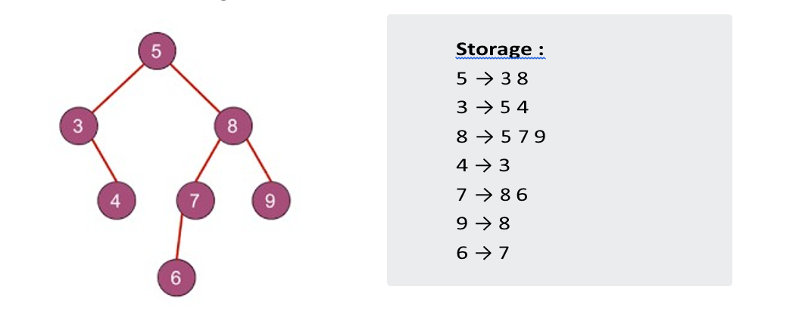
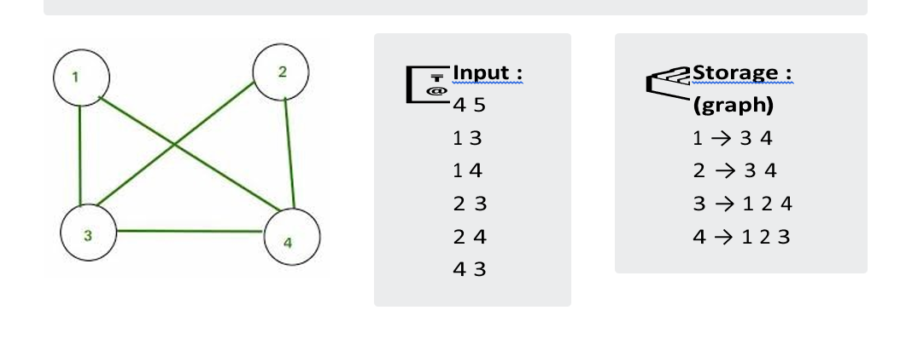
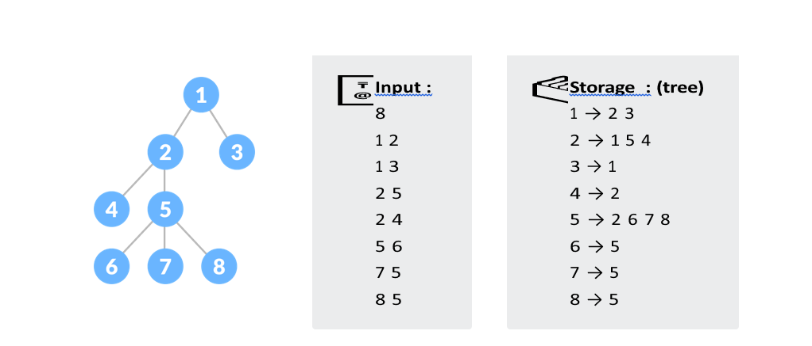

Depth First Search & it's Applications
It is one of the methods for searching which we generally used in Trees and Graphs data structures. Now, the question arises that,
- what type of search is this ?
- what's so unique about it ?
-
we will iterate till our stack not becomes empty and in each iteration, we pop a node element from the stack and traverse whatever adjacent nonvisited node left.
-
we pop 5 and push its adjacent element → Stack : 3 8
-
we pop 8 and then → Stack : 3 7 9 NOTE - we haven't push 5 (adjacent to node 8 as it's already visited.
-
we pop 9, Stack : 3 7 then pop 7 → Stack :3 6 then pop 6 .
-
pop 3 → Stack : 4 then pop 4.
Somehow we can relate the idea behind this search with its name only which says we have to search depth-first 😅. Let's understand it with an example:

The storage part in the right-hand side determines the method of storing a tree if you are not familiar with this then read my previous article on Introduction to Trees and Graphs in which I have discussed how you can store all the values of nodes and edges in Trees as well as in Graphs.
Now, when we have to traverse the above given tree using DFS then we will start with pushing a node 5 (root node) into a stack then followed by the process given below :
If we print every node after pop it will somehow look like,
PATH - 5 8 9 7 6 3 4
Similarly, we can do it for a graph by starting with the insertion of any node and popping every node while the stack is not empty and pushing every adjacent elements of a popped node.
Now it's time to understand the concept via c++ code so without wasting any time let's directly dive into it :
💡 You are given input in a format such as first line contains two spaceseparated integers 'N' & 'M' which tells the number of nodes and number of edges respectively. Then 'M' lines contain two spaceseparated integers 'u' & 'v' 1≤{u, v} N determines the edge between those two nodes.

Time Complexity : the time complexity is O ( V + E ) where V is the number of vertexes and E is the number of edges.
DFS using Recursion :
Also as we know whatever we can do with using stack same thing we can achieve using recursion also. Therefore, in this case, also we can code DFS using recursion which is quite preferable and shorter than using stack.
💡 You are given input in a format such as the first line contains an integer 'N' which tells the number of nodes. Then 'N1' lines contain two space-separated integers 'u' & 'v' 1≤{u, v} N determines the edge between those two nodes.

Here, below given two implementations of DFS using recursion both will show the same output. It just depends upon the need according to the problem we can use either of them.
 tree → 2D dynamic array, globally declared and elements of this is the
one represented in a storage section.
tree → 2D dynamic array, globally declared and elements of this is the
one represented in a storage section.
Time Complexity : the time complexity is O ( V + E )
where V is the number of vertexes and E is the number of edges.
visit → boolean vector of size n+1, globally declared
Note: The above one is preferable when there is some probability of having a
circle in a graph.
Time Complexity : the time complexity is O ( V + E )
where V is the number of vertexes and E is the number of edges.
prev → integer represents the parent node of the current node.
Note: Generally, we use the above type of DFS in trees where we know there will be
no cycle so we just need to check the previous node only.
Applications of DFS:
Now, if you are thinking where we can use this technique or why we need to traverse in a depth-first search manner then let me make you clear by showing some common examples:
 To find the parent of any node
:
To find the parent of any node
:
While using the DFS technique we come to any node from his parent node so we can keep a record of it so that we get the parent of every node. This approach we use while doing questions in which we require to find the Lowest Common Ancestor.
 Topological Sorting
:
Topological Sorting
:
This sorting is used while handling the processes in an Operating System and can be done by using DFS which serialize the processes in order of its execution.
 Bipartite Graphs
:
Bipartite Graphs
:
To check whether any given graph is a bipartite or not we can use DFS. In which we just need to track colour of every node and its previous node.
 Track a Path :
Track a Path :
Most of the time while tracking the path in a given graph like the shortest path between two nodes or a path with a minimum cost we can use DFS Algorithm.
 Detecting Cycle
:
Detecting Cycle
:
While traversing one node to another node if we reach the node from where we have started in DFS then we have detected a cycle.
In simple words, to solve any problem related to an array you have to traverse it first then store or record the data whatever is required according to the question. Similarly, in trees and graphs to solve any problem you first of all need to traverse it completely and arrange the data however it's required.
Hope, you get the point whatever I am trying to explain and rest you get more clear and comfortable after solving some of the problem where we need to use DFS here I am attaching some questions :
1. https://www.hackerrank.com/challenges/knightl-on-chessboard/problem
2.
https://www.geeksforgeeks.org/detect-cycle-undirected-graph/
3.
https://www.geeksforgeeks.org/find-paths-given-source-destination/
4.
https://www.hackerrank.com/challenges/count-luck/problem
This article is contributed by Rishabh Roshan
So that’s it for this article we will be coming up with our next article on further topics of Graph Theory very soon till then keep learning, keep coding, keep reading and keep improving !!
Happy Coding
By Programmers Army 😊